Traditional leadership is the missing link in livestock development
Emirs, Obas and chiefs hold the trust that vaccination campaigns and grazing reform depend on, yet they are rarely involved in project design.
Read moreWe work with state ministries, veterinary networks and traditional rulers to build the information systems and surveillance that livestock policy in Nigeria has never had.

The Center for Holistic Livestock Development Initiative is a Nigerian non-profit focusing on animal health, disease tracking, and local leadership.
Founded in 2018 under the Companies and Allied Matters Act, we build digital tracking platforms and partner with pastoral communities. We connect modern veterinary technology with traditional land governance to protect livestock, improve milk and meat yields, and strengthen regional supply chains.
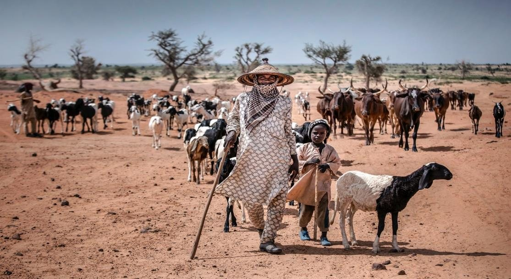
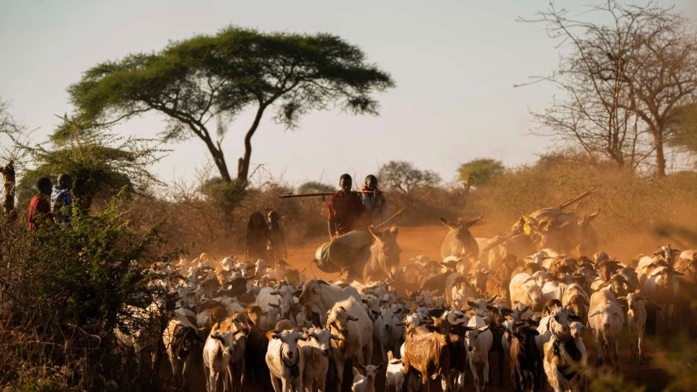
An Africa where pastoral families rely on healthy herds, clear market data, and strong local leadership.
To improve livestock productivity by building digital reporting systems, conducting practical veterinary research, and equipping local authorities to manage animal disease.
Livestock contributes roughly 5–8% of Nigeria's GDP and supports the livelihoods of over 20 million people. Yet the sector is held back by weak data, fragile animal health systems, degraded rangelands and conflict.
Indigenous cows yield around 5 litres a day against 15+ litres in dairy breeds, pushing Nigeria to import roughly 60% of its milk (some 900,000 tonnes) at a cost near $1.5 billion a year.
Shrinking grazing land drove 8,343 conflict deaths between 2005 and 2021. In Zamfara alone some 377,245 animals were stolen between 2011 and 2019, representing over ₦2.8 billion in losses.
Northern Nigeria loses around 350,000 hectares to desertification each year, costing an estimated $5.1 billion annually and steadily reducing available pasture.
Around 77% of livestock farmers across 16 states and the FCT keep no basic production records, and the traditional institutions closest to those communities have only ever been engaged passively.
Outbreaks of FMD, PPR and African Swine Fever persist because veterinary services are thin, biosecurity is weak and monitoring systems are fragmented.
Poor roads, absent cold storage and insufficient abattoirs and veterinary clinics drive high transit losses and lock producers out of formal markets.
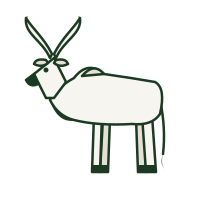
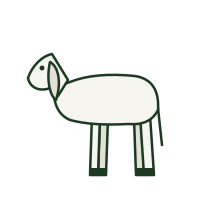
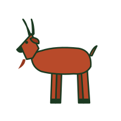
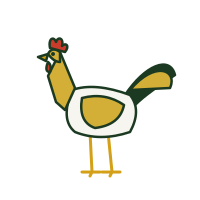
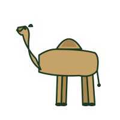
Designing and deploying livestock information management systems, with real-time analytics for disease surveillance and productivity tracking.
Applied research on context-specific challenges, promoting indigenous knowledge alongside evidence-based innovation.
Partnering with traditional leaders to connect local community governance with modern veterinary science.
Supporting market access, infrastructure and supply chain efficiency while promoting local agribusiness and entrepreneurship.
Training stakeholders in animal health, data use and system design, and building institutional capability at national, state and grassroots levels.
We convene the full spectrum of actors required for sustained livestock sector transformation.
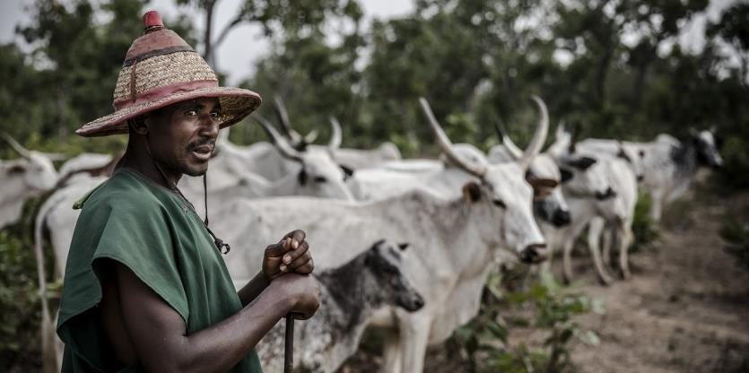
The households whose herds carry the sector
Respected leaders who manage community land and settle local disputes
Federal, state and local government authorities
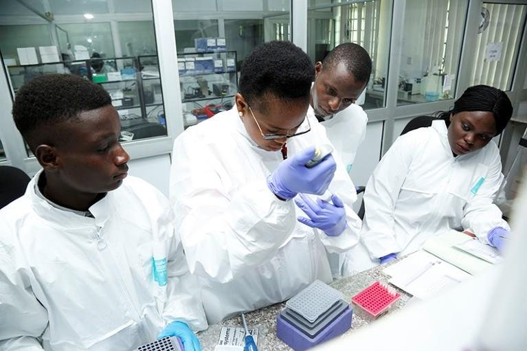
Institutions generating the evidence base
Multilateral, bilateral and philanthropic funders
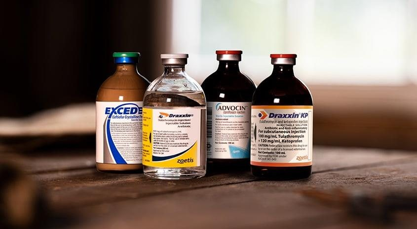
Input suppliers, processors, logistics and finance
Our Board of Trustees brings together world-recognised virology, regional animal health leadership and two of Nigeria's most respected traditional institutions.
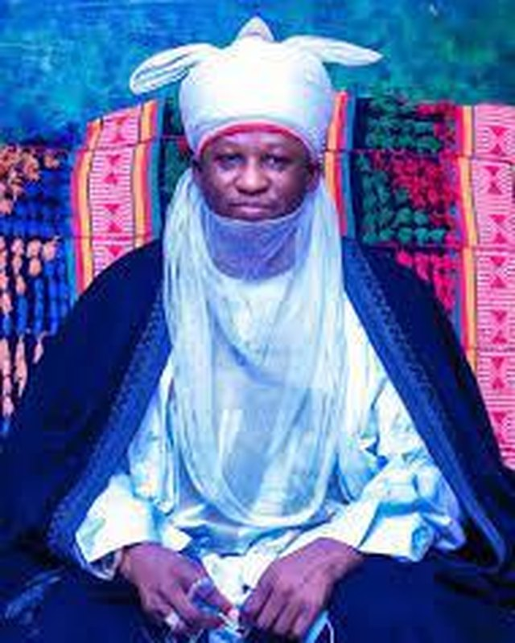
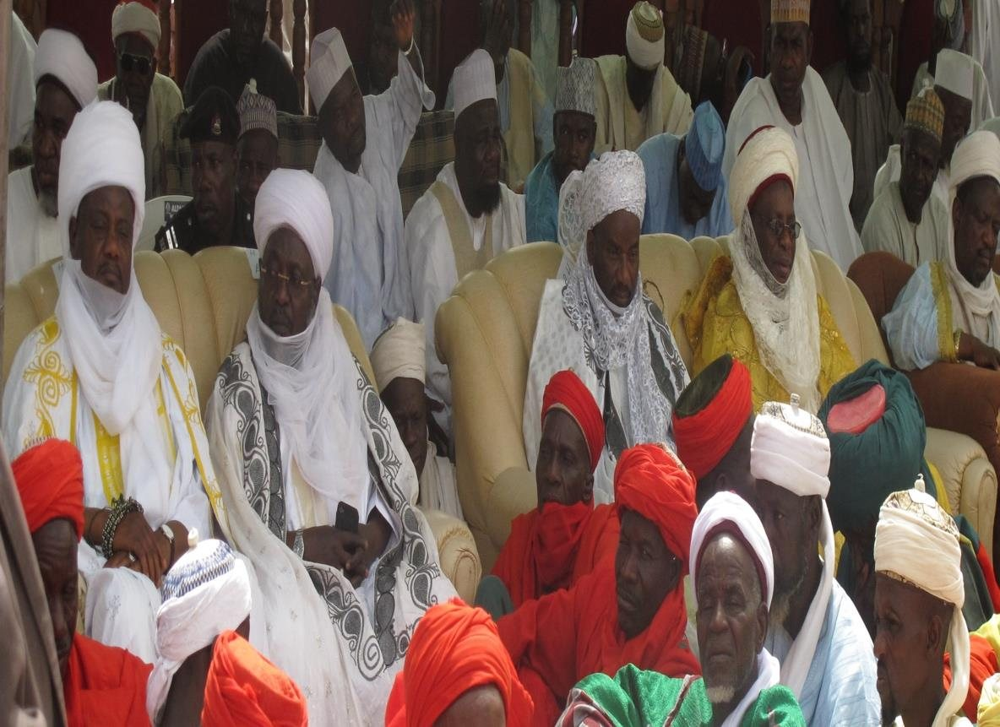
Emirs, Obas and chiefs hold the trust that vaccination campaigns and grazing reform depend on, yet they are rarely involved in project design.
Read more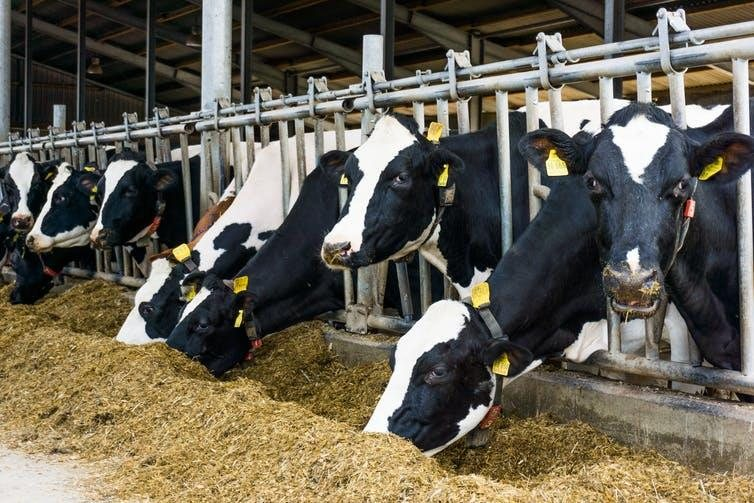
Around 77% of livestock farmers across 16 states keep no production records. Everything downstream, from policy to disease response, inherits that blind spot.
Read moreHow CHOLD Initiative plans to move from baseline data to practical changes in animal health, tracking systems, and emergency response.
Read moreWe work alongside government agencies, development funders, research institutes, and private sector partners to build resilient livestock systems across Africa.